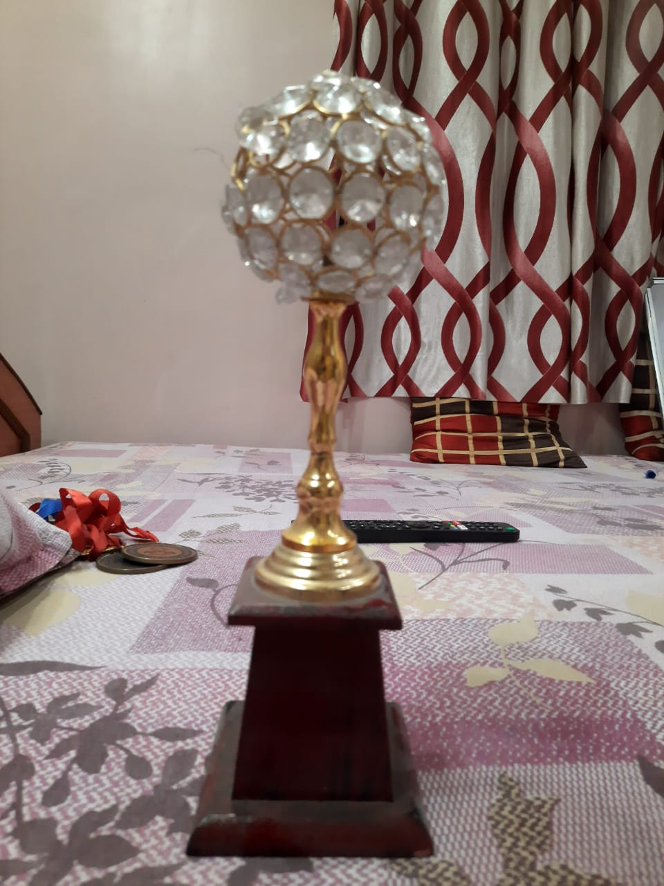
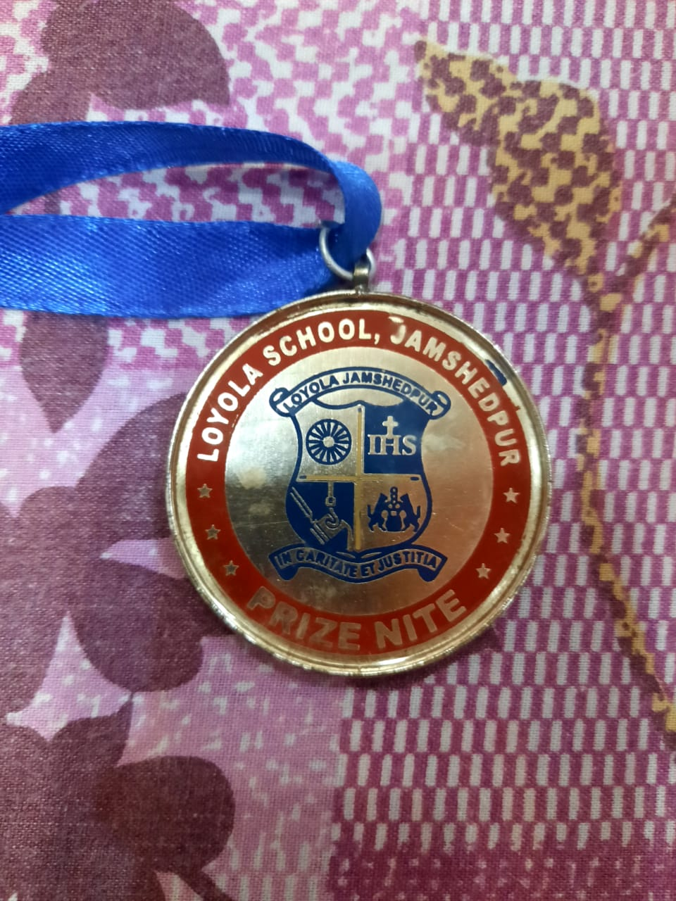

Campus Life

Fasy Auditorium in Northern Town, Jamshedpur is a top player in the category Auditoriums in the Jamshedpur. This well-known establishment acts as a one-stop destination servicing customers both local and from other parts of Jamshedpur. Over the course of its journey, this business has established a firm foothold in it’s industry. The belief that customer satisfaction is as important as their products and services, have helped this establishment garner a vast base of customers, which continues to grow by the day. This business employs individuals that are dedicated towards their respective roles and put in a lot of effort to achieve the common vision and larger goals of the company. In the near future, this business aims to expand its line of products and services and cater to a larger client base. In Jamshedpur, this establishment occupies a prominent location in Northern Town. It is an effortless task in commuting to this establishment as there are various modes of transport readily available. It is known to provide top service in the following categories: Auditoriums.

The center's primary goal will be dissemination of knowledge (and know-how) to teachers, researchers and students through short-courses, workshops, seminars and thematic live class. The centre will also engage in creating knowledge repositories through lectures for advanced courses by leading experts, compendium of projects, question bank, laboratory manuals and demonstrative experiments (for proof of concept), incorporation of new knowledge in the curriculum; open-source initiatives to create proper computational aids as national student initiatives/challenges; national student technological challenges and competitions – derive, draw, drive paradigm based.

One of the best public ground of jamshedpur to play all types of sports. There are no grass on field bt still is plain. It's a big ground. You can find all types people playing there in the morning and evening. It's also good ground for preparation of running for any defence jobs. There is parking too for vehicle. But always be careful about your gadgets. Don't leave them on ground or elsewhere as that might be stolen. I would say avoid taking any sorts of gadget there.For me personally this ground has been the playground of life in literal terms, since I was a kid. Now with time and pressure of being structurally developed our school Loyola has made a parking at one end of it. A good place to be around.
Achievements In School
Came First In School Chess Tournament!

I came first in a school chess tournament held by RSB in FASY Auditorium.
Came Second In Prize Nite

I came second in Prize Nite held by our School at teh end of the year in FASY Auditorium.
Came First In School Chess Tournament!
I came third in a Spelling Bee Inter School tournament held by Spell Bee in our city.
What's New
-

Jamshedpur's largest auditorium was inaugurated today by Tata Steel managing director T.V. Narendran on the premises of Loyola School in Bistupur.The three-storied air-conditioned Fasy Auditorium, named after the older one which was demolished in 2012 to make way for this, is one with world-class facilities, can seat 1,578, at least 170 more than Tata Auditorium. Principal Father Sebastian Puthenpura maintained the auditorium would not be let out on commercial purposes, as they were a Jesuit organisation. "But any educational institution can approach the school managing committee to stage their functions," he explained.The new auditorium, spread over 2,953 sq metres, has been built at a cost of over Rs 6 crore. Construction started on December 1, 2012, and was completed a week ago.Apart from two green rooms on the second floor, the auditorium also has four special classrooms - for music, activity, reading and computer.A Calcutta-based company has installed a sophisticated sound system with separate equalisers for around eight amplifiers. Special microphones with ability to catch high-resolution sound have also been installed, besides special absorption and reflection panels for better acoustics.
-

The center's primary goal will be dissemination of knowledge (and know-how) to teachers, researchers and students through short-courses, workshops, seminars and thematic live class. The centre will also engage in creating knowledge repositories through lectures for advanced courses by leading experts, compendium of projects, question bank, laboratory manuals and demonstrative experiments (for proof of concept), incorporation of new knowledge in the curriculum; open-source initiatives to create proper computational aids as national student initiatives/challenges; national student technological challenges and competitions – derive, draw, drive paradigm based. It has a library in which there is a cluster of books.On the thired floor, there is a computer lab in which junior students learn to access various features of a computer.
Contact Us